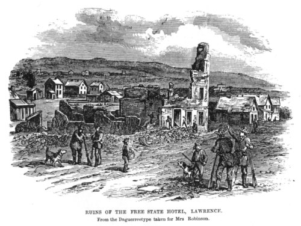

On May 21, 1856, a proslavery of about 800 armed men led by Sheriff Samuel Jones rode into Lawrence to arrest that a proslavery grand jury had called traitors. They destroyed two Free-State newspapers, shelled and burned the Free State Hotel, and burned Free-State leader Charles Robinson’s house. The only person killed was a proslavery attacker hit by falling debris.

“Ruin of the Free State Hotel, Lawrence.” In Robinson, Sara T. L. Kansas; Its Interior and Exterior Life. Boston: Crosby, Nichols, 1856. Kansas Collection Books. https://kancoll.org/books/robinson/r_hotel.htm.
📝 Before You Read
Do you agree or disagree with each statement? There are no wrong answers. You will look at these again after the reading.
If a court orders something, carrying it out is always legal.
Someone who was there is always the best source for what happened.
Violence is sometimes justified to achieve a political goal.
📖 The Reading
1854: Lawrence, a Free-State Town
in the northeastern states became determined to keep Kansas from becoming a slave state. They organized emigrant aid companies to encourage antislavery supporters to move to Kansas.
The most influential emigrant aid groups [sic] was the New England (originally incorporated as the Massachusetts Emigrant Aid Company in Worcester, MA in April, 1854 until the name was changed in February, 1855). This organization received both financial and moral support from prominent New England abolitionists. Company supporters lectured through out [sic] New England in an effort to raise funds and recruit settlers.
. . .
The first party from Massachusetts arrived in Kansas on August 1, 1854, and stopped at the area that would become the city of Lawrence. By the next spring, thirteen parties of approximately 1250 people had come to Kansas with the support of the company. The company also help [sic] with the founding of Topeka, Manhattan, and Osawatomie. It helped build mills in Lawrence, Topeka, Manhattan, Osawatomie, Burlington, Wabaunsee, Atchison, Batcheller (now Milford), and Mapleton. The Lawrence Herald of Freedom served as the newspaper for the company because it was financed with a loan from the New England Emigrant Aid Company.
Tensions in Kansas Territory were high in the spring of 1856. Incidents of violence along the Kansas-Missouri border between antislavery and proslavery were on the increase. The proslavery government was headquartered in Lecompton; the free-state government was headquartered in Topeka. Lawrence’s leaders were supportive of the free-state cause. A series of events led to the Sack of Lawrence on May 21, 1856.
Douglas County Sheriff Samuel Jones, a proslavery supporter, was attempting to arrest an antislavery man on April 23, 1856, when he was shot in the back. Jones survived and was driven out of town by Lawrence . J. B. Donaldson, a federal marshal determined that freestaters had interfered with the execution of the warrants and were using the Free State Hotel as a fort.
Proslavery supporters along the Kansas-Missouri border were concerned about a growing number of freestaters and had sent out a call to Southern states for able-bodied men to join their cause. About 400 men from Alabama and Georgia answered the call and on May 2, 1856, the expedition arrived near the border to offer military support. Proslavery troops killed John Stewart on May 5, 1856. Then Charles Lenhart, an antislavery supporter, was killed while investigating Stewart’s murder.
Amidst the brewing violence was the conflict of competing governments. Judge Samuel Dexter Lecompte, a proslavery supporter, ordered the arrest of Topeka’s free-state legislators on the grounds of . Freestaters like Charles Robinson and former governor Andrew Reeder refused to appear before the grand jury. To prevent the freestaters from fleeing, Jones’ [sic] stationed a large force of men and cannon near close to Robinson’s house. He posted troops on roads leading into the city.
On May 21, 1856, troops marched into Lawrence with a United States flag and one promoting “.” They attacked the free-state newspaper Herald of Freedom, which had been highly critical of the proslavery government, destroying the presses and throwing the into the Kansas River. They fired on the Free State Hotel with cannon balls, and then gutted the building with gunpowder and flame. They attacked the Kansas Free State newspaper, and other businesses, and burned Robinson’s house. The troops claimed they were executing the law. One man died during the violence, a proslavery man was killed with falling debris.
When John Brown, Jr, heard about the attack he gathered the men of the ; they arrived too late to help Lawrence. The Pottawatomie Rifles took their revenge several days later during the Pottawatomie Massacre on May 24, 1856.
Historians call words that carry strong feelings or judgments loaded language. Consider what you’ve read from Kansapedia’s description of the Sack of Lawrence and read Sara Robinson’s account below. Then find Robinson’s loaded words.
Click or tap every word or phrase in Robinson’s account that shows how she feels about what happened. (Keyboard: press Tab to enter the passage, use the arrow keys to move, and press Space to mark a word.)
Press Compare to see how your picks line up with Mr. Booth’s.
📜 Sara Robinson, a Lawrence resident whose home was burned, writing in 1856
The Free State office was first destroyed, the press being thrown into the river, while and books were thrown into the street, and destroyed. The types of the Herald of Freedom office were also put into the Kansas, and the press broken. The red flag of the South Carolinians was first hoisted upon this office, and in about fifteen minutes was removed to the hotel. The building was fired several times, but put out by the bravery of some of the young men in Lawrence, who were not deterred by the threats of the mob. Sheriff Jones placed two companies to carry the types of the offices to the river, and break the presses.
After the red flag had been hoisted upon the hotel, four cannons were stationed about one hundred and five feet distant from it, and pointing towards it. The first command was given to fire, and the balls went far above the hotel, and over into the ravine beyond the town. When the commenced, it was thought for women and children to leave the town, and many went across the ravine to some houses west of Lawrence. Thirty-two balls were fired, doing little damage to the hotel, the balls easily going through the concrete. Was the number significant of the admission of Kansas into the sisterhood of states? The walls of the hotel stood firmly, almost uninjured, and the patience of the , at so slow a progress, was getting weary. Their anticipations had been disappointed; for, on the first fire, the cry had been raised, "Now here she goes!"
. . .
When the walls of the hotel had fallen in, he turned to his posse and said, coolly, "You are dismissed; the writs have been executed."
. . .
About seven o'clock, the semi-human creatures began to leave the town. The large covered wagons, which stood near our house to receive the spoils, moved off. Houses out of town, which had escaped molestation, were opened for the reception of the destitute and homeless.
About nine o'clock the flames burst forth from the home on Mt. Oread, and the "legally organized militia" had completed their work. Many thousand dollars' worth of property had been destroyed. People had been robbed of their all. Lawrence was destroyed; and the President bears the . , ye American people, for he has for your fellow-countrymen bitterness and woe!